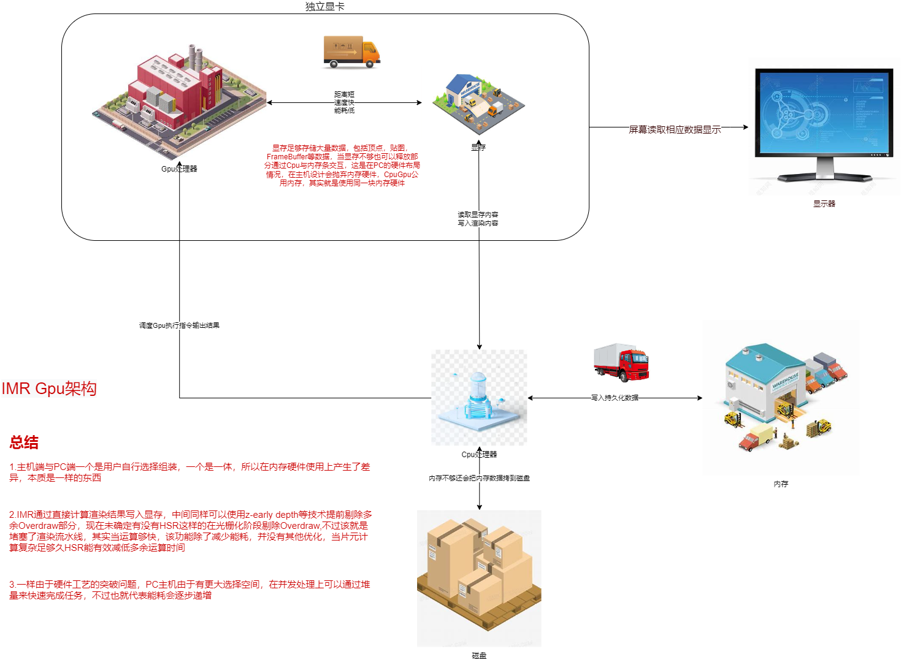
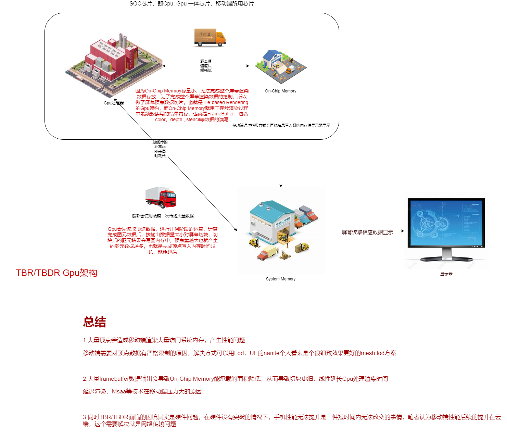

硬件
1.前言
- 对硬件的了解在实际程序实现方案优化方案的选择中有这重要的作用
- 本节内容主要记录主流GPU架构间的区别，用于在平台适配上做好程序兼容以及性能优化
2.硬件架构
- CPU
- GPU渲染架构
- IMR(Immediate Mode Rendering) 走直接渲染流水线模式，从数据到帧缓存区直流通，直接写入内存结果
- TBR/TBDR(Tile-based Deferred Rendering) 顶点运算切片，缓存顶点切片数据，按切片分批进入光栅化流程，在On-Chip Memory上做颜色缓冲，深度缓冲，模板缓存的结果读写，当整块切片运算结束后，写入对应的内存模块
3.个人理解
Gpu架构的差异理解
- TBR/TBDR工序比IMR烦琐，对内容写入更增加了顶点数据这一块，本身属于一个无奈之举，On-Chip Memory作为一个SOC上芯片的内存存储块，由于硬件的体积工艺问题，本身存储的量很有限，通过Gpu内置内存块能有效加快Gpu运算结果输入输出的时间，同时通过片内访问减少总线访问，减少带宽从而减低能耗，但在SOC芯片上完成没法提供这样的一个存储条件，因此只能将输出切块，让On-Chip Memory能满足完成渲染的部分存储条件。
- 通过TBR/TBDR的架构理解，我们也能明白MSAA方案，延迟渲染方案为什么会影响移动端渲染性能，无论MSAA方案，还是延迟渲染方案都需要大量的显存支持，使用这些方案就意味着On-Chip Memory单位处理的像素面积缩小，同时需要处理的切片次数就要增加
- 同时在Gpu厂家会开发出各种不同的技术方案去优化移动端性能，例如
- 高通的Gpu芯片支持IMR与TBR的切换，这在使用后处理时候能让屏幕不需要切片处理提升处理效率，
- 还有像PowerVR的TBDR方案，其中这个D值HSR技术，个人理解其实是等待片元结果通过覆盖片源数据，然后进入片源着色阶段，从而优化Overdraw的策略，该策略因为会使用等待覆盖方式，当开启alpha test，HSR就需要失效，要先进入片元着色计算结果才能或者正确的渲染结果
- 同时苹果渲染有提供延迟渲染一次批次完成渲染结果的方案，按Unity的支持和功能思考来说，其实是On-Chip Memory做出了一次性给延迟渲染存储数据，在一次渲染流程中在On-Chip Memory做了多次渲染，该方案虽然能把延迟渲染通过一次渲染完成，但是占用了更多显存数据，所以On-Chip Memory单次处理的面积会下降，从而延长总处理时间，所以对于延迟渲染优化还是需要往数据压缩方向优化
Gpu架构实际图示例
- IMR(Immediate Mode Rendering) 
- TBR/TBDR(Tile-based Deferred Rendering) 